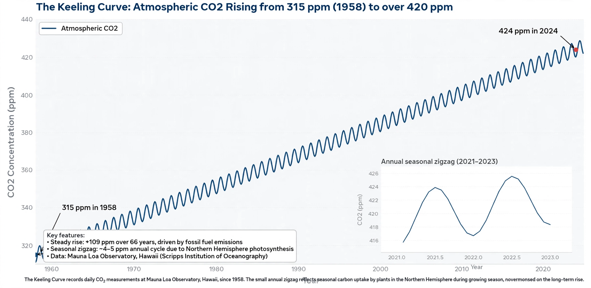

Keeling Curve

The Keeling Curve is the graph of atmospheric carbon dioxide concentration measured at the Mauna Loa Observatory in Hawaii since 1958. It is among the most famous datasets in science: a steadily rising curve with a regular annual sawtooth, documenting humanity's alteration of the atmosphere in a single picture.
When measurements began, CO₂ stood at about 315 parts per million; it passed 400 ppm in the 2010s and exceeds 420 ppm in the 2020s — higher than at any time in at least two million years.
The measurements
Charles David Keeling of the Scripps Institution of Oceanography chose Mauna Loa — remote, high and far from pollution sources — and insisted on meticulous calibration, producing a record of unmatched consistency. The programme survived repeated funding crises; today it is run by Scripps with parallel measurements by NOAA at a global network of stations.
The sawtooth reflects the Northern Hemisphere's growing season: each spring and summer, photosynthesis draws CO₂ down; each autumn and winter, decay returns it. The annual minimum and maximum differ by roughly 6–7 ppm at Mauna Loa, more at high northern latitudes.
Significance
The curve demonstrated, within a few years, that CO₂ from fossil fuels was accumulating in the air rather than being absorbed instantly by the oceans — the factual foundation of Global warming science and a fixture of IPCC reports. Its continuing rise, accelerating from under 1 ppm per year in the 1960s to roughly 2.5 ppm per year recently, is the simplest summary measure of progress, or its absence, in Climate mitigation.
See also: Charles David Keeling · Greenhouse gas · Global warming · Carbon cycle · Climate change